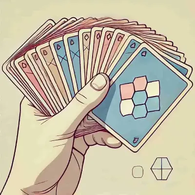

1. Analyser la main de départ
Observez attentivement les cartes dont vous disposez. Priorisez celles qui infligent rapidement des dégâts ou celles qui se combinent entre elles pour des effets dévastateurs.
2. Gérer ses alliances
Dans rdvptrwjeiptwpes, former des alliances peut vous sauver la mise. Mais attention aux retournements de situation : vos alliés peuvent devenir ennemis.
3. Miser sur la dissuasion
Même si vous n’avez pas les cartes les plus puissantes, bluffez ! Montrez une assurance pour convaincre les autres joueurs de ne pas vous attaquer.
4. Adapter sa stratégie en temps réel
Les parties de rdvptrwjeiptwpes sont dynamiques. Surveillez les évolutions du plateau et ajustez votre jeu (attaque ou défense) pour garder une longueur d’avance.